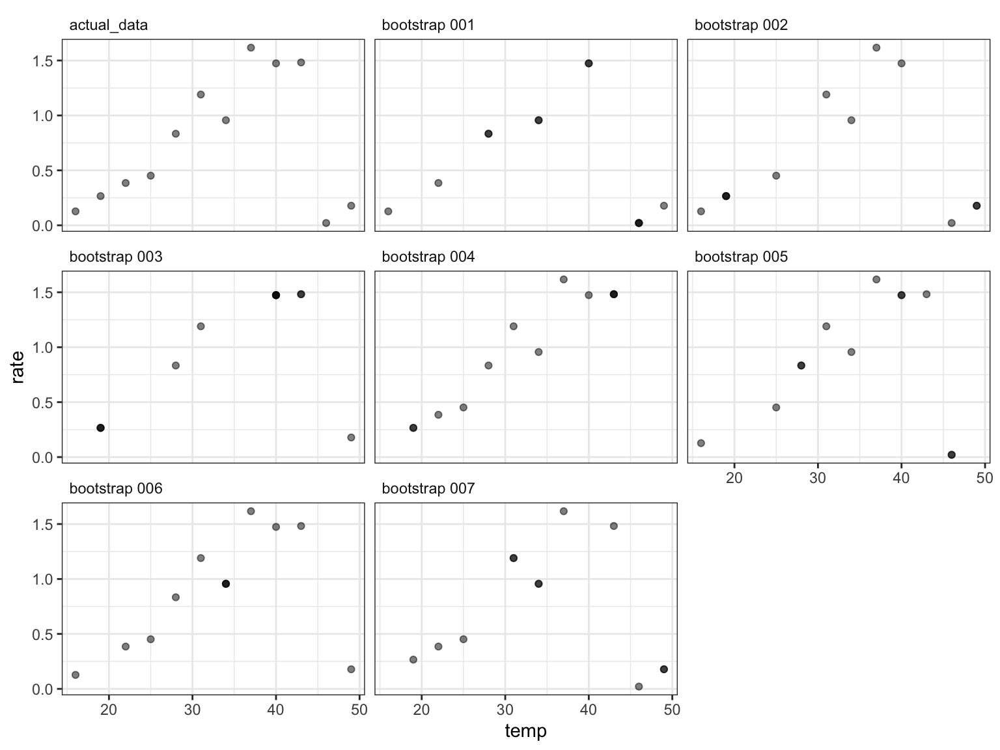
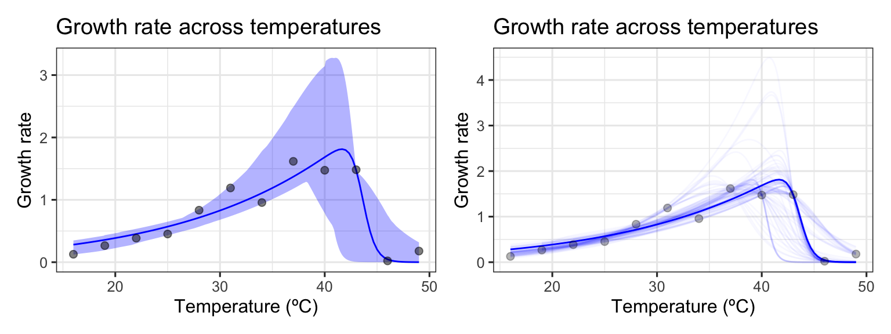

Bootstrapping using rTPC
Daniel Padfield
2020-07-20
Source:vignettes/bootstrapping_models.Rmd
bootstrapping_models.RmdA brief example of how model weighting can be used to help account for measurement uncertainty when fitting models to TPCs using rTPC, nls.multstart, and the tidyverse.
Things to consider
- This vignette is still a work in progress
- Significant differences between parameters can be evaluated by re-sampling the whole dataset with replacement
- When there are fewer data points-per-curve, re-sampling the whole dataset with replacement may result in some re-sampled datasets not having any points beyond the optimum temperature
- In these instances, creating new datasets from mean centre residuals of the original model fit can allow the confidence intervals of derived parameters to be estimated. However, these are likely to increase false positives if used for hypothesis testing.
- Think carefully at about your level of replication.
# load packages library(rTPC) library(nls.multstart) library(broom) library(tidyverse) library(modelr) library(progress) library(patchwork) # edit nls_multstart to allow for a progress bar nls_multstart_progress <- function(formula, data = parent.frame(), iter, start_lower, start_upper, supp_errors = c("Y", "N"), convergence_count = 100, control, modelweights, ...){ if(!is.null(pb)){ pb$tick() } nls_multstart(formula = formula, data = data, iter = iter, start_lower = start_lower, start_upper = start_upper, supp_errors = supp_errors, convergence_count = convergence_count, control = control, modelweights = modelweights, ...) }
Resampling the original data with replacement
Bootstrapping involves simulating “new” datasets produced from the existing data by sampling with replacement. The same model is then fitted separately on each individual bootstrapped dataset. Doing this over and over allows us to visualise uncertainty of predictions and produce confidence intervals of estimated parameters.
First, we will demonstrate a situation when this approach works very well, using data from a recent paper by Padfield et al. (2020), that measures the thermal performance of the bacteria, Pseudomonas fluorescens, in the presence and absence of its phage, \(\phi 2\). In this study, each single growth rate estimate is a technical replicate, coming from an isogenic strain of bacteria either inoculated with, or without, the phage. As such, all the data points within each phage treatment can be used to estimate the same curve. This becomes obvious as there is no rep column as in the chlorella_tpc dataset, but we can visualise one of the curves (bacteria in the absence of phage), using ggplot2.
# load in data data("bacteria_tpc") # keep just a single curve d <- filter(bacteria_tpc, phage == 'nophage') # show the data ggplot(d, aes(temp, rate)) + geom_point(size = 2, alpha = 0.5) + theme_bw(base_size = 12) + labs(x = 'Temperature (ºC)', y = 'Growth rate', title = 'Growth rate across temperatures')

As in the study, we can fit the Sharpe-Schoolfield model to the data and plot the predictions using the approaches in vignette(rTPC) and vignette(fit_many_models).
# fit Sharpe-Schoolfield model d_fit <- nest(d, data = c(temp, rate)) %>% mutate(sharpeschoolhigh = map(data, ~nls_multstart(rate~sharpeschoolhigh_1981(temp = temp, r_tref,e,eh,th, tref = 15), data = .x, iter = c(3,3,3,3), start_lower = get_start_vals(.x$temp, .x$rate, model_name = 'sharpeschoolhigh_1981') - 10, start_upper = get_start_vals(.x$temp, .x$rate, model_name = 'sharpeschoolhigh_1981') + 10, lower = get_lower_lims(.x$temp, .x$rate, model_name = 'sharpeschoolhigh_1981'), upper = get_upper_lims(.x$temp, .x$rate, model_name = 'sharpeschoolhigh_1981'), supp_errors = 'Y', convergence_count = FALSE)), # create new temperature data new_data = map(data, ~tibble(temp = seq(min(.x$temp), max(.x$temp), length.out = 100))), # predict over that data, preds = map2(sharpeschoolhigh, new_data, ~augment(.x, newdata = .y))) # unnest predictions d_preds <- select(d_fit, preds) %>% unnest(preds) # plot data and predictions ggplot() + geom_line(aes(temp, .fitted), d_preds, col = 'blue') + geom_point(aes(temp, rate), d, size = 2, alpha = 0.5) + theme_bw(base_size = 12) + labs(x = 'Temperature (ºC)', y = 'Growth rate', title = 'Growth rate across temperatures')
 Here we have the best fit to the data. If we want confidence bands around this prediction, we can get those by resampling the data a number of times. To illustrate this approach, I will create 250 bootstraps of the data and fit separate models to each using the modelr package. We will create a progress bar as used in
Here we have the best fit to the data. If we want confidence bands around this prediction, we can get those by resampling the data a number of times. To illustrate this approach, I will create 250 bootstraps of the data and fit separate models to each using the modelr package. We will create a progress bar as used in vignette(fit_many_curves) to track the progress of the fit.
# number of boots n_boots <- 250 # create new datasets and prepare them for fitting d_boots <- group_by(d, phage) %>% do(modelr::bootstrap(., n = n_boots, id = 'boot_num')) %>% ungroup() %>% mutate(strap = map(strap, data.frame)) # start progress bar and estimate time it will take number_of_models <- 1 # setup progress bar pb <- progress::progress_bar$new(total = n_boots*number_of_models, clear = FALSE, format ="[:bar] :percent :elapsedfull") # fit each model d_boots <- mutate(d_boots, refit = map(strap, ~ nls_multstart_progress(rate~sharpeschoolhigh_1981(temp = temp, r_tref,e,eh,th, tref = 15), data = .x, iter = c(3,3,3,3), start_lower = get_start_vals(.x$temp, .x$rate, model_name = 'sharpeschoolhigh_1981') - 10, start_upper = get_start_vals(.x$temp, .x$rate, model_name = 'sharpeschoolhigh_1981') + 10, lower = get_lower_lims(.x$temp, .x$rate, model_name = 'sharpeschoolhigh_1981'), upper = get_upper_lims(.x$temp, .x$rate, model_name = 'sharpeschoolhigh_1981'), supp_errors = 'Y', convergence_count = FALSE)), # create new temperature data new_data = map(strap, ~tibble(temp = seq(min(.x$temp), max(.x$temp), by = 0.1))), # predict over that data preds = map2(refit, new_data, ~augment(.x, newdata = .y)))
[=========================================================] 100% 00:02:04glimpse(d_boots) #> Rows: 250 #> Columns: 6 #> $ phage <chr> "nophage", "nophage", "nophage", "nophage", "nophage", "noph… #> $ strap <list> [<data.frame[47 x 3]>, <data.frame[47 x 3]>, <data.frame[47… #> $ boot_num <chr> "001", "002", "003", "004", "005", "006", "007", "008", "009… #> $ refit <list> [<function () , resid, function () , rhs, function () , for… #> $ new_data <list> [<tbl_df[221 x 1]>, <tbl_df[221 x 1]>, <tbl_df[221 x 1]>, <… #> $ preds <list> [<tbl_df[221 x 2]>, <tbl_df[221 x 2]>, <tbl_df[221 x 2]>, <…
Each bootstrapped model is stored in refit, with the predictions stored in preds. We can easily create confidence intervals around the original fitted predictions and overlay them onto our first plot. We can also just show some of the bootstrapped predictions alongside those of the original model.
# calculate bootstrapped confidence intervals d_conf <- select(d_boots, preds) %>% unnest(preds) %>% group_by(temp) %>% summarise(conf_lower = quantile(.fitted, 0.025), conf_upper = quantile(.fitted, 0.975)) %>% ungroup() #> `summarise()` ungrouping output (override with `.groups` argument) # unnest all predictions d_boot_preds <- select(d_boots, boot_num, preds) %>% unnest(preds) # plot bootstrapped CIs p1 <- ggplot() + geom_line(aes(temp, .fitted), d_preds, col = 'blue') + geom_ribbon(aes(temp, ymin = conf_lower, ymax = conf_upper), d_conf, fill = 'blue', alpha = 0.3) + geom_point(aes(temp, rate), d, size = 2, alpha = 0.5) + theme_bw(base_size = 12) + labs(x = 'Temperature (ºC)', y = 'Growth rate', title = 'Growth rate across temperatures') # plot bootstrapped predictions p2 <- ggplot() + geom_line(aes(temp, .fitted), d_preds, col = 'blue') + geom_line(aes(temp, .fitted, group = boot_num), d_boot_preds, col = 'blue', alpha = 0.03) + geom_point(aes(temp, rate), d, size = 2, alpha = 0.5) + theme_bw(base_size = 12) + labs(x = 'Temperature (ºC)', y = 'Growth rate', title = 'Growth rate across temperatures') p1 + p2

This method becomes more problematic when there is a small sample size. It is common for thermal performance curves to only have a single measurement at each temperature. This means that lots of the bootstrapped models will not have any points from that temperature. This can be seen by bootstrapping-with-replacement a curve from the chlorella_tpc dataset used throughout these vignettes.
# load in chlorella data data('chlorella_tpc') d2 <- filter(chlorella_tpc, curve_id == 1) # number of boots n_boots <- 250 # create new datasets and prepare them for fitting d_boots <- group_by(d2, curve_id) %>% do(modelr::bootstrap(., n = n_boots, id = 'boot_num')) %>% ungroup() %>% mutate(strap = map(strap, data.frame)) # plot ten of these alongside the actual data d_boots_plot <- select(d_boots, -curve_id) %>% unnest(strap) %>% filter(as.numeric(boot_num) < 8) %>% mutate(., boot_num = paste('bootstrap', boot_num, sep = ' ')) %>% bind_rows(., mutate(d2, boot_num = 'actual_data')) # plot ggplot(d_boots_plot, aes(temp, rate)) + geom_point(alpha = 0.5) + facet_wrap(~boot_num) + theme_bw() + theme(strip.background = element_blank(), strip.text = element_text(hjust = 0))

By plotting some of the bootstrapped datasets, we can see which points of the original data were resampled (darker points). There are many different curves that can come from these resampled curves. This is likely to be a bigger problem when there is only one point beyond the optimum of the curve. We can see how much of a problem this is when we model the raw data and the bootstrapped data as before.
As before, the model predictions of each bootstrap are taken only from the range of temperatures of that bootstrapped dataset, not the range of values of the raw dataset.
# fit Sharpe-Schoolfield model to raw data d_fit <- nest(d2, data = c(temp, rate)) %>% mutate(sharpeschoolhigh = map(data, ~nls_multstart(rate~sharpeschoolhigh_1981(temp = temp, r_tref,e,eh,th, tref = 15), data = .x, iter = c(3,3,3,3), start_lower = get_start_vals(.x$temp, .x$rate, model_name = 'sharpeschoolhigh_1981') - 10, start_upper = get_start_vals(.x$temp, .x$rate, model_name = 'sharpeschoolhigh_1981') + 10, lower = get_lower_lims(.x$temp, .x$rate, model_name = 'sharpeschoolhigh_1981'), upper = get_upper_lims(.x$temp, .x$rate, model_name = 'sharpeschoolhigh_1981'), supp_errors = 'Y', convergence_count = FALSE)), # create new temperature data new_data = map(data, ~tibble(temp = seq(min(.x$temp), max(.x$temp), length.out = 100))), # predict over that data, preds = map2(sharpeschoolhigh, new_data, ~augment(.x, newdata = .y))) # start progress bar and estimate time it will take number_of_models <- 1 # setup progress bar pb <- progress::progress_bar$new(total = n_boots*number_of_models, clear = FALSE, format ="[:bar] :percent :elapsedfull") nls_multstart_safe <- possibly(nls_multstart_progress, otherwise = NA, quiet = TRUE) # fit each model d_boots <- mutate(d_boots, refit = map(strap, ~ nls_multstart_safe(rate~sharpeschoolhigh_1981(temp = temp, r_tref,e,eh,th, tref = 15), data = .x, iter = 200, start_lower = get_start_vals(.x$temp, .x$rate, model_name = 'sharpeschoolhigh_1981') - 10, start_upper = get_start_vals(.x$temp, .x$rate, model_name = 'sharpeschoolhigh_1981') + 10, lower = get_lower_lims(.x$temp, .x$rate, model_name = 'sharpeschoolhigh_1981'), upper = get_upper_lims(.x$temp, .x$rate, model_name = 'sharpeschoolhigh_1981'), supp_errors = 'Y', convergence_count = FALSE))) #> Warning in runif(iter, .x, .y): NAs produced #> Warning in runif(iter, .x, .y): NAs produced #> Warning in runif(iter, .x, .y): NAs produced #> Warning in runif(iter, .x, .y): NAs produced #> Warning in runif(iter, .x, .y): NAs produced #> Warning in runif(iter, .x, .y): NAs produced #> Warning in runif(iter, .x, .y): NAs produced #> Warning in runif(iter, .x, .y): NAs produced #> Warning in runif(iter, .x, .y): NAs produced #> Warning in runif(iter, .x, .y): NAs produced #> Warning in runif(iter, .x, .y): NAs produced #> Warning in runif(iter, .x, .y): NAs produced #> Warning in runif(iter, .x, .y): NAs produced # remove fits that are NA d_boots <- filter(d_boots, !is.na(refit)) nrow(d_boots) #> [1] 237 # create new temperature data d_boots <- mutate(d_boots, new_data = map(strap, ~tibble(temp = seq(min(.x$temp), max(.x$temp), by = 0.1))), # predict over that data preds = map2(refit, new_data, ~augment(.x, newdata = .y))) # calculate bootstrapped confidence intervals d_conf <- select(d_boots, preds) %>% unnest(preds) %>% mutate(temp = round(temp, 1)) %>% group_by(temp) %>% summarise(conf_lower = quantile(.fitted, 0.025), conf_upper = quantile(.fitted, 0.975)) %>% ungroup() #> `summarise()` ungrouping output (override with `.groups` argument) head(d_conf) #> # A tibble: 6 x 3 #> temp conf_lower conf_upper #> <dbl> <dbl> <dbl> #> 1 16 0.114 0.331 #> 2 16.1 0.116 0.333 #> 3 16.2 0.118 0.335 #> 4 16.3 0.121 0.338 #> 5 16.4 0.123 0.340 #> 6 16.5 0.125 0.343 # unnest all predictions d_boot_preds <- select(d_boots, boot_num, preds) %>% unnest(preds) # unnest predictions d_preds <- select(d_fit, preds) %>% unnest(preds) # plot bootstrapped CIs p1 <- ggplot() + geom_line(aes(temp, .fitted), d_preds, col = 'blue') + geom_ribbon(aes(temp, ymin = conf_lower, ymax = conf_upper), d_conf, fill = 'blue', alpha = 0.3) + geom_point(aes(temp, rate), d2, size = 2, alpha = 0.5) + theme_bw(base_size = 12) + labs(x = 'Temperature (ºC)', y = 'Growth rate', title = 'Growth rate across temperatures') # plot bootstrapped predictions p2 <- ggplot() + geom_line(aes(temp, .fitted), d_preds, col = 'blue') + geom_line(aes(temp, .fitted, group = boot_num), d_boot_preds, col = 'blue', alpha = 0.03) + geom_point(aes(temp, rate), d2, size = 2, alpha = 0.3) + theme_bw(base_size = 12) + labs(x = 'Temperature (ºC)', y = 'Growth rate', title = 'Growth rate across temperatures') p1 + p2

As can be seen, bootstrapping-with-replacement with only a single point at each temperature can lead to a large variety of fits. In the second panel, we can see the variety of the curve fits, clustering around 4 possible paths for the decrease in rate beyond the optimum temperature. This makes the uncertainty around these predictions, and the derived estimate \(E_h\) highly uncertain using this method of bootstrapping.
Resampling residuals
Re-sampling the data with replacement is the most common way of thinking about bootstrapping. However, bootstrapping ordinary least squares regression models is often done using bootstrapping residuals.
NB The Padfield _et al.__ analysis actually uses a Bayesian approach to fit thermal performance curves, quantify uncertainty, and estimate derived parameters. This approach is powerful and flexible, and becoming easier to use with the incredible development of the R package brms. Examples of using brms to model thermal performance curves can be found on the GitHub repository of the paper
References
- https://statweb.stanford.edu/~owen/courses/305a/FoxOnBootingRegInR.pdf
- http://wangyuchen.github.io/rnote/chap4-1.html#leverage-values
- https://stats.stackexchange.com/questions/29990/identifying-outliers-for-non-linear-regression
- https://www.stat.cmu.edu/~cshalizi/402/lectures/08-bootstrap/lecture-08.pdf
- https://people.math.umass.edu/~johnpb/s697m/boot.pdf